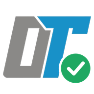

Renk ailesini seçin. Açık/koyu görünüm cihazınızın sistem temasını otomatik izler.
Sistem görünümü: —
Güne başlarken bugünün görevlerini bildirir; gün sonunda ise açık kalan çentikleri hatırlatır. İki bildirim birbirinden bağımsız açılıp kapatılabilir.
PIN isteğe bağlıdır. Belirlemediğiniz sürece Çeteleler normal şekilde açılır. PIN etkinse her Çetele açılışında yeniden sorulur.
Bekleyen başvurular yükleniyor…
Kullanıcı listesi yükleniyor…
Tarihten bağımsız listelerin.
Çakılı açılıyor…
Gününü kaydet.
Bu Çeteleyi açmak için PIN'inizi girin. PIN hiçbir cihazda hatırlanmaz.
Çetele açılıyor…
Çetele sınıra ulaştı
Listeyi bir aktif Çentik kullanıcısıyla paylaşabilirsiniz. İki kullanıcı da görevleri anlık olarak düzenleyebilir.
4 veya 6 haneli bir PIN belirleyin.
Kendi gününü işaretle.
E-postanıza 6 haneli bir kod göndereceğiz.